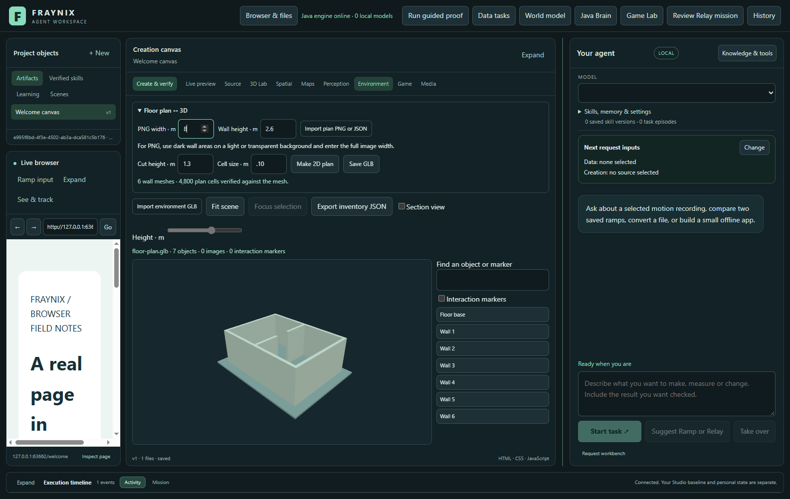
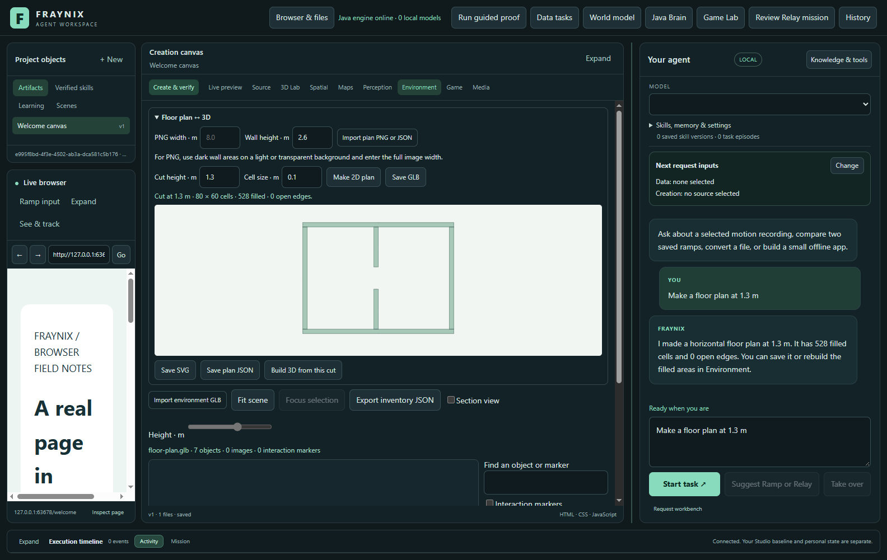

Turn floor plans into 3D and back
Import a wall mask, open the model in Blender, and measure its floor plan again.

Fraynix raises a scaled wall mask as an editable room model

A chat request produces a measured horizontal section with the doorway still open
System files
Open source